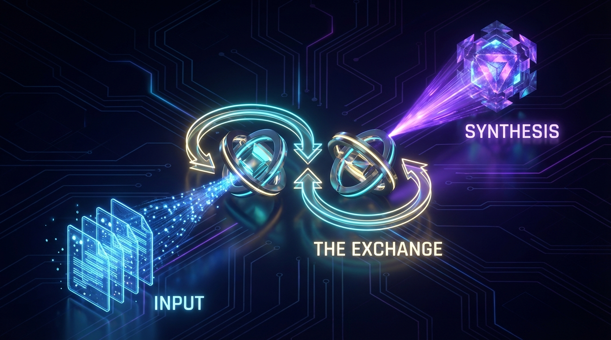

Socratic Dialogue
Explore complex ideas through rigorous, automated questioning. This task orchestrates a dialectic between a Questioner and a Responder to uncover hidden assumptions, identify contradictions, and synthesize deep insights from your initial hypothesis.
Core Capabilities
Powered by multi-agent recursive logic
Dual-Agent Dialectic
Orchestrates a debate between a "Questioner" and a "Responder" to simulate rigorous critical thinking.
Assumption Challenger
Actively identifies and challenges the underlying premises of arguments rather than just accepting surface-level answers.
Context Aware
Ingests local files via glob patterns to ground the dialogue in specific documentation or codebases.
Automated Synthesis
Compiles the back-and-forth exchange into a structured report highlighting key insights and contradictions.
Domain Constraints
Keeps the conversation focused by applying strict topic boundaries to the agents.
Configurable Depth
Control the number of exchange cycles (1-20) to balance speed vs. depth of inquiry.
Execution Configuration
ReadyConfigure the task on the left and click "Start Dialogue" to begin the Socratic process.
// Dialogue transcript will appear here...The Dialectic Process
How the Socratic Dialogue Task constructs knowledge

Initialization
The system ingests the initial hypothesis and context files, then instantiates two distinct personas: a Questioner and a Responder.
Recursive Exchange
The Questioner challenges the Responder's previous statement. The Responder clarifies or revises. This loop repeats for the configured depth.
Synthesis
Once the depth limit is reached, a third process analyzes the entire transcript to extract insights, contradictions, and conclusions.
When to Use
Research Validation
Before committing to a research path, use the dialogue to find holes in your initial hypothesis or experimental design.
Architectural Review
Feed system design documents as context and ask the agent to challenge the scalability or security assumptions of the architecture.
Ethical Analysis
Explore the potential downstream consequences of a product decision by constraining the domain to "Ethics" and "Society".
Learning & Study
Use the tool to deepen your own understanding of a complex topic by observing the agents debate definitions and principles.